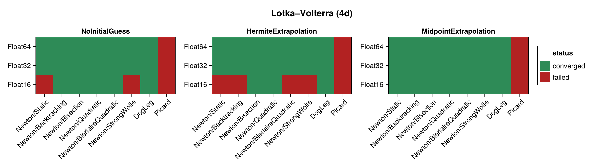
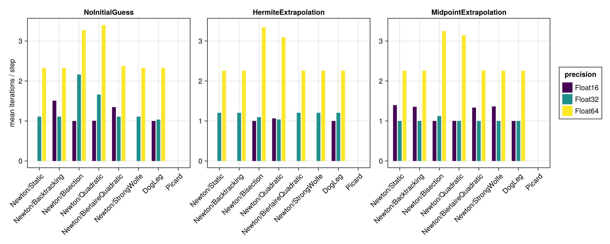
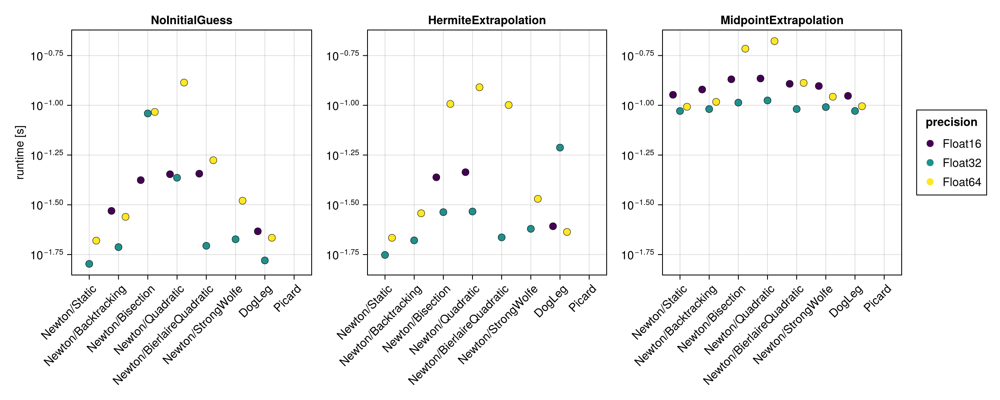
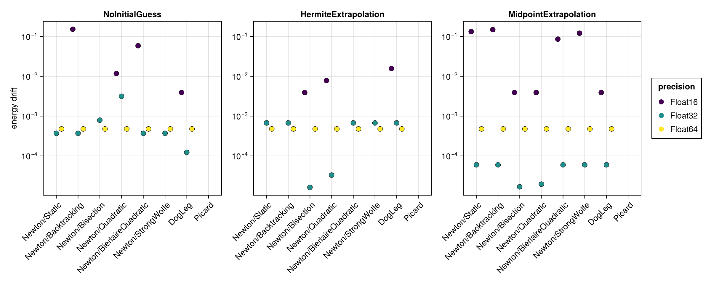
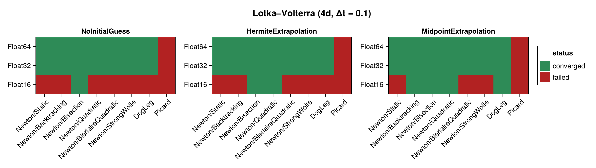
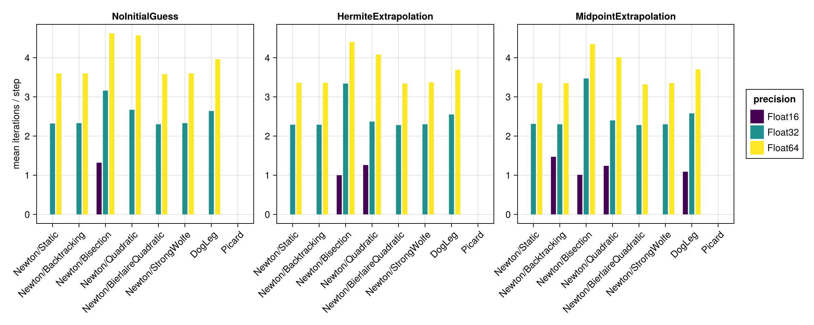
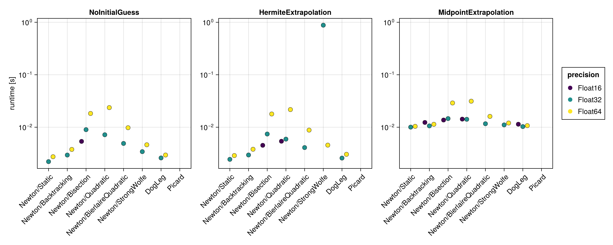
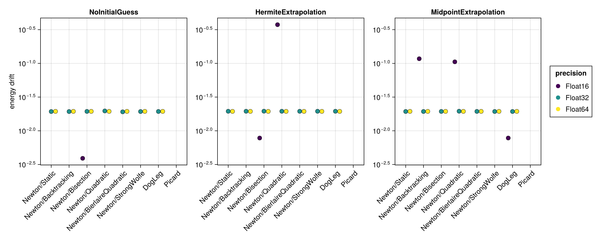

Lotka–Volterra (4d)
The 4d Lotka–Volterra system is a larger non-canonical Hamiltonian system, benchmarked in its implicit form via iodeproblem. Its Hamiltonian $H = a \cdot q + b \cdot \log q$ (positions only) is used for the energy-drift metric. It is more strongly degenerate than the Lotka–Volterra (2d) system and is the most demanding test for the nonlinear solvers here. As for the 2d case the native time span $(0, 10)$ with $\Delta t = 0.01$ is used, and then repeated for a ten times coarser step $\Delta t = 0.1$ (see Coarse time step (Δt = 0.1)).
The benchmark below is regenerated at documentation build time with a single, fast timing pass. See the driver script scripts/midpoint_lotka_volterra_4d.jl for accurate BenchmarkTools measurements.
using SolverBenchmark
spec = lotka_volterra_4d_spec()
df = run_benchmark(spec; timing = :quick, verbose = false, quiet = true)Convergence
plot_convergence(df; title = "Lotka–Volterra (4d)")
Nonlinear iterations
Mean number of nonlinear-solver iterations per time step (converged runs only):
plot_iterations(df)
Run time
plot_runtime(df)
Energy drift
Drift of the conserved Hamiltonian:
plot_energy_drift(df)
Discussion
- As for the 2d system,
Newton(robust line search) andDogLegconverge in about 2 iterations per step atFloat32/Float64(slightly more than the 2d case, ≈ 2.3), whilePicardnever converges. As for the 2d system,Picardis the only failure atFloat32/Float64. - The stronger degeneracy makes
Float16fail even more readily — the Newton linear solve raises a singular-Jacobian error for most configurations.Float32andFloat64again give essentially the same convergence pattern. - This example demonstrates the harness's robustness: configurations that throw a
SingularException(rather than merely diverging) are caught and recorded as non-converged instead of aborting the sweep.
Results table
markdown_table(summary_table(df))| precision | solver_label | initial_guess | converged | iterations_mean | runtime_s | max_residual | energy_drift |
|---|---|---|---|---|---|---|---|
| Float16 | Newton/Static | NoInitialGuess | ✗ | — | — | — | — |
| Float16 | Newton/Static | HermiteExtrapolation | ✗ | — | — | — | — |
| Float16 | Newton/Static | MidpointExtrapolation | ✓ | 1.4 | 0.113 | 0.00743 | 0.133 |
| Float16 | Newton/Backtracking | NoInitialGuess | ✓ | 1.51 | 0.0295 | 0.00779 | 0.152 |
| Float16 | Newton/Backtracking | HermiteExtrapolation | ✗ | — | — | — | — |
| Float16 | Newton/Backtracking | MidpointExtrapolation | ✓ | 1.35 | 0.12 | 0.00774 | 0.148 |
| Float16 | Newton/Bisection | NoInitialGuess | ✓ | 1 | 0.0421 | 0.00568 | 0 |
| Float16 | Newton/Bisection | HermiteExtrapolation | ✓ | 1 | 0.0435 | 0.00779 | 0.00391 |
| Float16 | Newton/Bisection | MidpointExtrapolation | ✓ | 1 | 0.135 | 0.0067 | 0.00391 |
| Float16 | Newton/Quadratic | NoInitialGuess | ✓ | 1 | 0.045 | 0.00741 | 0.0117 |
| Float16 | Newton/Quadratic | HermiteExtrapolation | ✓ | 1.06 | 0.0461 | 0.0078 | 0.00781 |
| Float16 | Newton/Quadratic | MidpointExtrapolation | ✓ | 1 | 0.136 | 0.00723 | 0.00391 |
| Float16 | Newton/BierlaireQuadratic | NoInitialGuess | ✓ | 1.35 | 0.0453 | 0.00779 | 0.0586 |
| Float16 | Newton/BierlaireQuadratic | HermiteExtrapolation | ✗ | — | — | — | — |
| Float16 | Newton/BierlaireQuadratic | MidpointExtrapolation | ✓ | 1.33 | 0.128 | 0.00743 | 0.0859 |
| Float16 | Newton/StrongWolfe | NoInitialGuess | ✗ | — | — | — | — |
| Float16 | Newton/StrongWolfe | HermiteExtrapolation | ✗ | — | — | — | — |
| Float16 | Newton/StrongWolfe | MidpointExtrapolation | ✓ | 1.36 | 0.125 | 0.00762 | 0.121 |
| Float16 | DogLeg | NoInitialGuess | ✓ | 1 | 0.0233 | 0.00615 | 0.00391 |
| Float16 | DogLeg | HermiteExtrapolation | ✓ | 1 | 0.0247 | 0.00692 | 0.0156 |
| Float16 | DogLeg | MidpointExtrapolation | ✓ | 1 | 0.112 | 0.00728 | 0.00391 |
| Float16 | Picard | NoInitialGuess | ✗ | — | — | — | — |
| Float16 | Picard | HermiteExtrapolation | ✗ | 7.65 | 0.0905 | 0.974 | — |
| Float16 | Picard | MidpointExtrapolation | ✗ | — | — | — | — |
| Float32 | Newton/Static | NoInitialGuess | ✓ | 1.11 | 0.016 | 9.45e-07 | 0.00037 |
| Float32 | Newton/Static | HermiteExtrapolation | ✓ | 1.21 | 0.0177 | 9.5e-07 | 0.000673 |
| Float32 | Newton/Static | MidpointExtrapolation | ✓ | 1 | 0.0936 | 6.47e-07 | 5.96e-05 |
| Float32 | Newton/Backtracking | NoInitialGuess | ✓ | 1.11 | 0.0194 | 9.45e-07 | 0.00037 |
| Float32 | Newton/Backtracking | HermiteExtrapolation | ✓ | 1.21 | 0.021 | 9.5e-07 | 0.000673 |
| Float32 | Newton/Backtracking | MidpointExtrapolation | ✓ | 1 | 0.0957 | 6.47e-07 | 5.96e-05 |
| Float32 | Newton/Bisection | NoInitialGuess | ✓ | 2.16 | 0.091 | 9.5e-07 | 0.000791 |
| Float32 | Newton/Bisection | HermiteExtrapolation | ✓ | 1.1 | 0.029 | 9.42e-07 | 1.62e-05 |
| Float32 | Newton/Bisection | MidpointExtrapolation | ✓ | 1.12 | 0.103 | 9.53e-07 | 1.67e-05 |
| Float32 | Newton/Quadratic | NoInitialGuess | ✓ | 1.66 | 0.0432 | 9.53e-07 | 0.00314 |
| Float32 | Newton/Quadratic | HermiteExtrapolation | ✓ | 1.04 | 0.0293 | 9.3e-07 | 3.29e-05 |
| Float32 | Newton/Quadratic | MidpointExtrapolation | ✓ | 1 | 0.106 | 8.2e-07 | 1.96e-05 |
| Float32 | Newton/BierlaireQuadratic | NoInitialGuess | ✓ | 1.11 | 0.0197 | 9.45e-07 | 0.00037 |
| Float32 | Newton/BierlaireQuadratic | HermiteExtrapolation | ✓ | 1.21 | 0.0217 | 9.5e-07 | 0.000673 |
| Float32 | Newton/BierlaireQuadratic | MidpointExtrapolation | ✓ | 1 | 0.0958 | 6.47e-07 | 5.96e-05 |
| Float32 | Newton/StrongWolfe | NoInitialGuess | ✓ | 1.11 | 0.0212 | 9.45e-07 | 0.00037 |
| Float32 | Newton/StrongWolfe | HermiteExtrapolation | ✓ | 1.21 | 0.024 | 9.5e-07 | 0.000673 |
| Float32 | Newton/StrongWolfe | MidpointExtrapolation | ✓ | 1 | 0.098 | 6.47e-07 | 5.96e-05 |
| Float32 | DogLeg | NoInitialGuess | ✓ | 1.03 | 0.0166 | 9.52e-07 | 0.000123 |
| Float32 | DogLeg | HermiteExtrapolation | ✓ | 1.21 | 0.0613 | 9.5e-07 | 0.000673 |
| Float32 | DogLeg | MidpointExtrapolation | ✓ | 1 | 0.0937 | 6.47e-07 | 5.96e-05 |
| Float32 | Picard | NoInitialGuess | ✗ | — | — | — | — |
| Float32 | Picard | HermiteExtrapolation | ✗ | 7.52 | 0.0784 | 0.000456 | — |
| Float32 | Picard | MidpointExtrapolation | ✗ | 7.53 | 0.14 | 0.00035 | — |
| Float64 | Newton/Static | NoInitialGuess | ✓ | 2.33 | 0.0209 | 1.75e-15 | 0.000476 |
| Float64 | Newton/Static | HermiteExtrapolation | ✓ | 2.26 | 0.0216 | 1.69e-15 | 0.000476 |
| Float64 | Newton/Static | MidpointExtrapolation | ✓ | 2.26 | 0.0983 | 1.64e-15 | 0.000476 |
| Float64 | Newton/Backtracking | NoInitialGuess | ✓ | 2.33 | 0.0275 | 1.75e-15 | 0.000476 |
| Float64 | Newton/Backtracking | HermiteExtrapolation | ✓ | 2.26 | 0.0287 | 1.69e-15 | 0.000476 |
| Float64 | Newton/Backtracking | MidpointExtrapolation | ✓ | 2.26 | 0.104 | 1.64e-15 | 0.000476 |
| Float64 | Newton/Bisection | NoInitialGuess | ✓ | 3.27 | 0.0926 | 1.75e-15 | 0.000476 |
| Float64 | Newton/Bisection | HermiteExtrapolation | ✓ | 3.34 | 0.102 | 1.74e-15 | 0.000476 |
| Float64 | Newton/Bisection | MidpointExtrapolation | ✓ | 3.25 | 0.193 | 1.67e-15 | 0.000476 |
| Float64 | Newton/Quadratic | NoInitialGuess | ✓ | 3.4 | 0.13 | 1.76e-15 | 0.000476 |
| Float64 | Newton/Quadratic | HermiteExtrapolation | ✓ | 3.09 | 0.123 | 1.75e-15 | 0.000476 |
| Float64 | Newton/Quadratic | MidpointExtrapolation | ✓ | 3.14 | 0.21 | 1.78e-15 | 0.000476 |
| Float64 | Newton/BierlaireQuadratic | NoInitialGuess | ✓ | 2.38 | 0.053 | 1.77e-15 | 0.000476 |
| Float64 | Newton/BierlaireQuadratic | HermiteExtrapolation | ✓ | 2.26 | 0.1 | 1.65e-15 | 0.000476 |
| Float64 | Newton/BierlaireQuadratic | MidpointExtrapolation | ✓ | 2.26 | 0.13 | 1.71e-15 | 0.000476 |
| Float64 | Newton/StrongWolfe | NoInitialGuess | ✓ | 2.33 | 0.0331 | 1.75e-15 | 0.000476 |
| Float64 | Newton/StrongWolfe | HermiteExtrapolation | ✓ | 2.26 | 0.0339 | 1.69e-15 | 0.000476 |
| Float64 | Newton/StrongWolfe | MidpointExtrapolation | ✓ | 2.26 | 0.11 | 1.64e-15 | 0.000476 |
| Float64 | DogLeg | NoInitialGuess | ✓ | 2.33 | 0.0216 | 1.75e-15 | 0.000476 |
| Float64 | DogLeg | HermiteExtrapolation | ✓ | 2.26 | 0.0231 | 1.69e-15 | 0.000476 |
| Float64 | DogLeg | MidpointExtrapolation | ✓ | 2.26 | 0.0989 | 1.64e-15 | 0.000476 |
| Float64 | Picard | NoInitialGuess | ✗ | — | — | — | — |
| Float64 | Picard | HermiteExtrapolation | ✗ | — | — | — | — |
| Float64 | Picard | MidpointExtrapolation | ✗ | 60.3 | 1.1 | 3.36 | — |
Coarse time step (Δt = 0.1)
The same benchmark over $(0, 10)$ with a ten times larger step. As for the 2d system the converging solvers need more iterations (≈ 3.4 per step instead of ≈ 2), the same configurations keep failing, and Float16 fails almost entirely.
spec1 = lotka_volterra_4d_spec(timespan = (0.0, 10.0), timestep = 0.1)
df1 = run_benchmark(spec1; timing = :quick, verbose = false, quiet = true)Convergence
plot_convergence(df1; title = "Lotka–Volterra (4d, Δt = 0.1)")
Nonlinear iterations
plot_iterations(df1)
Run time
plot_runtime(df1)
Energy drift
plot_energy_drift(df1)
Results table
markdown_table(summary_table(df1))| precision | solver_label | initial_guess | converged | iterations_mean | runtime_s | max_residual | energy_drift |
|---|---|---|---|---|---|---|---|
| Float16 | Newton/Static | NoInitialGuess | ✗ | — | — | — | — |
| Float16 | Newton/Static | HermiteExtrapolation | ✗ | 2.28 | 0.00324 | NaN | — |
| Float16 | Newton/Static | MidpointExtrapolation | ✗ | 1.27 | 0.00974 | NaN | — |
| Float16 | Newton/Backtracking | NoInitialGuess | ✗ | — | — | — | — |
| Float16 | Newton/Backtracking | HermiteExtrapolation | ✗ | — | — | — | — |
| Float16 | Newton/Backtracking | MidpointExtrapolation | ✓ | 1.47 | 0.0123 | 0.0078 | 0.117 |
| Float16 | Newton/Bisection | NoInitialGuess | ✓ | 1.32 | 0.00537 | 0.00778 | 0.00391 |
| Float16 | Newton/Bisection | HermiteExtrapolation | ✓ | 1 | 0.00452 | 0.00568 | 0.00781 |
| Float16 | Newton/Bisection | MidpointExtrapolation | ✓ | 1.01 | 0.0137 | 0.00589 | 0 |
| Float16 | Newton/Quadratic | NoInitialGuess | ✗ | — | — | — | — |
| Float16 | Newton/Quadratic | HermiteExtrapolation | ✓ | 1.26 | 0.0054 | 0.0074 | 0.375 |
| Float16 | Newton/Quadratic | MidpointExtrapolation | ✓ | 1.24 | 0.0143 | 0.0071 | 0.105 |
| Float16 | Newton/BierlaireQuadratic | NoInitialGuess | ✗ | — | — | — | — |
| Float16 | Newton/BierlaireQuadratic | HermiteExtrapolation | ✗ | — | — | — | — |
| Float16 | Newton/BierlaireQuadratic | MidpointExtrapolation | ✗ | — | — | — | — |
| Float16 | Newton/StrongWolfe | NoInitialGuess | ✗ | — | — | — | — |
| Float16 | Newton/StrongWolfe | HermiteExtrapolation | ✗ | — | — | — | — |
| Float16 | Newton/StrongWolfe | MidpointExtrapolation | ✗ | — | — | — | — |
| Float16 | DogLeg | NoInitialGuess | ✗ | 2.38 | 0.00255 | 0.0693 | — |
| Float16 | DogLeg | HermiteExtrapolation | ✗ | 2.1 | 0.00356 | 0.0511 | — |
| Float16 | DogLeg | MidpointExtrapolation | ✓ | 1.09 | 0.0114 | 0.00682 | 0.00781 |
| Float16 | Picard | NoInitialGuess | ✗ | — | — | — | — |
| Float16 | Picard | HermiteExtrapolation | ✗ | 4.36 | 0.00641 | 0.127 | — |
| Float16 | Picard | MidpointExtrapolation | ✗ | 6.12 | 0.017 | 0.167 | — |
| Float32 | Newton/Static | NoInitialGuess | ✓ | 2.32 | 0.00221 | 8.37e-07 | 0.0193 |
| Float32 | Newton/Static | HermiteExtrapolation | ✓ | 2.29 | 0.00244 | 8.6e-07 | 0.0195 |
| Float32 | Newton/Static | MidpointExtrapolation | ✓ | 2.31 | 0.01 | 7.53e-07 | 0.0193 |
| Float32 | Newton/Backtracking | NoInitialGuess | ✓ | 2.33 | 0.00295 | 8.37e-07 | 0.0193 |
| Float32 | Newton/Backtracking | HermiteExtrapolation | ✓ | 2.29 | 0.00296 | 8.6e-07 | 0.0195 |
| Float32 | Newton/Backtracking | MidpointExtrapolation | ✓ | 2.3 | 0.0106 | 7.53e-07 | 0.0193 |
| Float32 | Newton/Bisection | NoInitialGuess | ✓ | 3.16 | 0.00898 | 9.5e-07 | 0.0194 |
| Float32 | Newton/Bisection | HermiteExtrapolation | ✓ | 3.34 | 0.00742 | 8.88e-07 | 0.0195 |
| Float32 | Newton/Bisection | MidpointExtrapolation | ✓ | 3.47 | 0.0146 | 8.5e-07 | 0.0194 |
| Float32 | Newton/Quadratic | NoInitialGuess | ✓ | 2.67 | 0.00718 | 8.53e-07 | 0.0197 |
| Float32 | Newton/Quadratic | HermiteExtrapolation | ✓ | 2.37 | 0.00593 | 9.3e-07 | 0.0195 |
| Float32 | Newton/Quadratic | MidpointExtrapolation | ✓ | 2.4 | 0.0142 | 9.15e-07 | 0.0195 |
| Float32 | Newton/BierlaireQuadratic | NoInitialGuess | ✓ | 2.3 | 0.00491 | 8.76e-07 | 0.0191 |
| Float32 | Newton/BierlaireQuadratic | HermiteExtrapolation | ✓ | 2.28 | 0.00409 | 7.56e-07 | 0.0195 |
| Float32 | Newton/BierlaireQuadratic | MidpointExtrapolation | ✓ | 2.28 | 0.0116 | 6.42e-07 | 0.0194 |
| Float32 | Newton/StrongWolfe | NoInitialGuess | ✓ | 2.33 | 0.00342 | 8.37e-07 | 0.0193 |
| Float32 | Newton/StrongWolfe | HermiteExtrapolation | ✓ | 2.3 | 0.88 | 8.6e-07 | 0.0195 |
| Float32 | Newton/StrongWolfe | MidpointExtrapolation | ✓ | 2.3 | 0.0111 | 7.53e-07 | 0.0193 |
| Float32 | DogLeg | NoInitialGuess | ✓ | 2.64 | 0.0026 | 9.03e-07 | 0.0193 |
| Float32 | DogLeg | HermiteExtrapolation | ✓ | 2.55 | 0.00258 | 8.6e-07 | 0.0195 |
| Float32 | DogLeg | MidpointExtrapolation | ✓ | 2.58 | 0.0103 | 7.55e-07 | 0.0193 |
| Float32 | Picard | NoInitialGuess | ✗ | — | — | — | — |
| Float32 | Picard | HermiteExtrapolation | ✗ | — | — | — | — |
| Float32 | Picard | MidpointExtrapolation | ✗ | — | — | — | — |
| Float64 | Newton/Static | NoInitialGuess | ✓ | 3.6 | 0.00274 | 1.61e-15 | 0.0194 |
| Float64 | Newton/Static | HermiteExtrapolation | ✓ | 3.36 | 0.00288 | 1.23e-15 | 0.0194 |
| Float64 | Newton/Static | MidpointExtrapolation | ✓ | 3.35 | 0.0104 | 1.69e-15 | 0.0194 |
| Float64 | Newton/Backtracking | NoInitialGuess | ✓ | 3.6 | 0.00377 | 1.61e-15 | 0.0194 |
| Float64 | Newton/Backtracking | HermiteExtrapolation | ✓ | 3.36 | 0.0038 | 1.23e-15 | 0.0194 |
| Float64 | Newton/Backtracking | MidpointExtrapolation | ✓ | 3.35 | 0.0114 | 1.69e-15 | 0.0194 |
| Float64 | Newton/Bisection | NoInitialGuess | ✓ | 4.62 | 0.0183 | 1.58e-15 | 0.0194 |
| Float64 | Newton/Bisection | HermiteExtrapolation | ✓ | 4.4 | 0.0179 | 1.75e-15 | 0.0194 |
| Float64 | Newton/Bisection | MidpointExtrapolation | ✓ | 4.35 | 0.029 | 1.12e-15 | 0.0194 |
| Float64 | Newton/Quadratic | NoInitialGuess | ✓ | 4.57 | 0.0236 | 1.78e-15 | 0.0194 |
| Float64 | Newton/Quadratic | HermiteExtrapolation | ✓ | 4.08 | 0.0217 | 1.2e-15 | 0.0194 |
| Float64 | Newton/Quadratic | MidpointExtrapolation | ✓ | 4.01 | 0.0313 | 1.43e-15 | 0.0194 |
| Float64 | Newton/BierlaireQuadratic | NoInitialGuess | ✓ | 3.58 | 0.00978 | 1.44e-15 | 0.0194 |
| Float64 | Newton/BierlaireQuadratic | HermiteExtrapolation | ✓ | 3.34 | 0.00881 | 1.77e-15 | 0.0194 |
| Float64 | Newton/BierlaireQuadratic | MidpointExtrapolation | ✓ | 3.32 | 0.0161 | 1.72e-15 | 0.0194 |
| Float64 | Newton/StrongWolfe | NoInitialGuess | ✓ | 3.6 | 0.00463 | 1.61e-15 | 0.0194 |
| Float64 | Newton/StrongWolfe | HermiteExtrapolation | ✓ | 3.37 | 0.00456 | 1.23e-15 | 0.0194 |
| Float64 | Newton/StrongWolfe | MidpointExtrapolation | ✓ | 3.35 | 0.012 | 1.69e-15 | 0.0194 |
| Float64 | DogLeg | NoInitialGuess | ✓ | 3.96 | 0.00295 | 1.77e-15 | 0.0194 |
| Float64 | DogLeg | HermiteExtrapolation | ✓ | 3.69 | 0.00304 | 1.44e-15 | 0.0194 |
| Float64 | DogLeg | MidpointExtrapolation | ✓ | 3.7 | 0.0107 | 1.69e-15 | 0.0194 |
| Float64 | Picard | NoInitialGuess | ✗ | — | — | — | — |
| Float64 | Picard | HermiteExtrapolation | ✗ | — | — | — | — |
| Float64 | Picard | MidpointExtrapolation | ✗ | 68.9 | 0.145 | 50 | — |